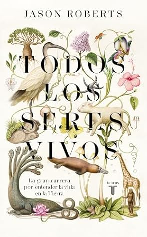

Todos los seres vivos
Reseña por Jorge I. Zuluaga

Ver reseña en GoodReads (necesita cuenta)
Para empezar hay que decir que "Todos los seres vivos" no es un libro sobre animales y plantas (como me di cuenta que creyó un amigo que me sigue en redes sociales y me vio recomendando el libro recientemente). Es un libro sobre dos seres humanos con una ambición común: responder a la pregunta de si se puede meter a la increíble diversidad de la vida en un esquema de clasificación y de nombrado universal. Es un libro sobre dos respuestas contradictorias: el si teológico de Carl Linneo y el no complejista de Georges-Louis Leclerc (conde de Buffon), los protagonistas centrales de esta historia.
El resultado de recorrer la original y entretenida narración que elabora el periodista científico Jason Roberts, su autor, puede no dejar muy bien parados a personajes muy admirados de la historia de la ciencia. Linneo, en particular, queda expuesto como el personaje peculiar y en muchos aspectos perverso que ahora sabemos que fue. Yo que me lo imaginaba (sin profundizar demasiado) como una especie de Mendel de la taxonomía, no esperaba encontrarme con la joyita que nos pinta el relato de Roberts (¿tal vez se le fue la mano?). Por el otro lado, el relato nos revela a un personaje prácticamente olvidado por la divulgación tradicional de la ciencias pero ampliamente admirado por sus contemporáneos: el gran Georges-Louis Leclerc conde de Buffon, que de aceptar los detalles de la narración de Roberts pareció anticiparse a los más importantes descubrimientos de las ciencias naturales del siglo XIX y de la modernidad. ¡Un verdadero personaje de novela este Buffon!
Pero el libro no se restringe unicamente a la historia de Linneo y Buffon. No se queda simplemente con una narración cronológica del surgimiento del sistema de clasificación taxonómicas por el que admiramos recordamos todos a Linneo. Tampoco se reduce a la temprana comprensión de Buffon de la increíble complejidad de relaciones que existen entre las especies vivas y el hecho de que concebir a la vida como una totalidad estática a la espera de que la nombremos es simplemente ingenua. El libro va más allá y conecta estos descubrimientos con los grandes hallazgos de la biología del siglo XIX y principios del XX.
Por sus páginas pasan también las historias de Cuvier, de Mendel, de Darwin, de Wallace, de Lamarck y de muchos otros personajes que desconocía pero ahora sé que jugaron un papel fundamental en la "novela" de la biología.
A quiénes les guste la historia de la ciencia bien contada, este libro es una lectura imperdible. Quiénes quieren saber de animales y plantas posiblemente es mejor que busquen en otra parte.